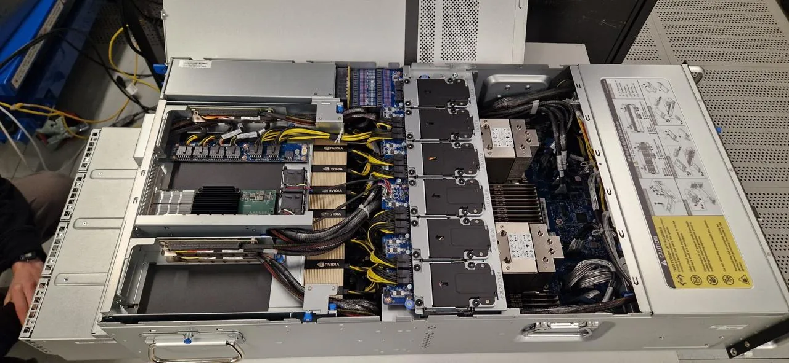
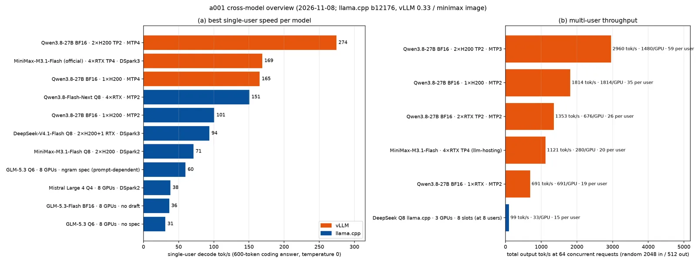
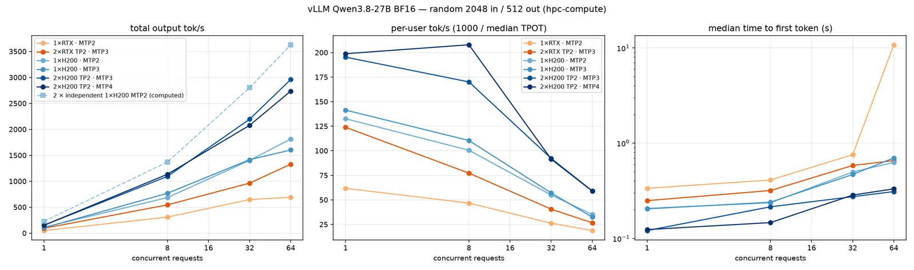
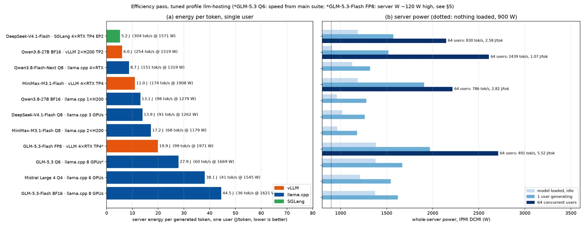
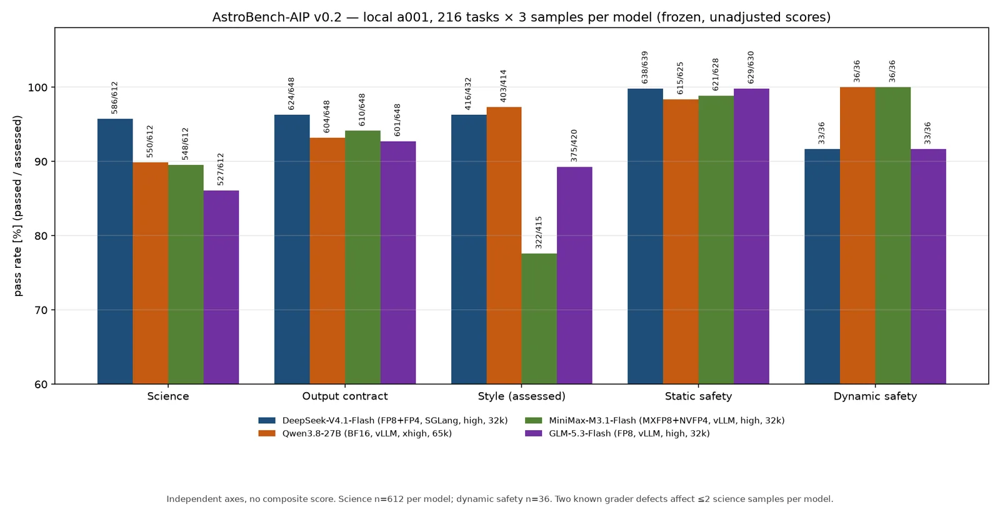

What eight GPUs of two different generations can and cannot do for an institute that wants to run its own language models: measured speed, multi-user throughput, energy per token, and answer quality on real astronomy work.
Many research institutes now face the same question. Should we send our prompts, code and unpublished data to a commercial API, or run open-weight models on our own hardware? The answer depends on numbers that are surprisingly hard to find: how fast a given model runs on a given GPU, how many people it can serve at once, how much electricity it burns, and whether its answers are good enough for science.
In November 2026 we measured these numbers on a new GPU server at the Leibniz Institute for Astrophysics Potsdam (AIP). Because general-purpose leaderboards say little about astronomy, we also built our own benchmark, AstroBench-AIP, from the tasks astronomers at the institute actually do. This post summarises what we found. The short version: the software stack matters more than the number of GPUs, memory bandwidth decides speed, and a well-served 27-billion-parameter model can outperform a commercial API for many simultaneous users, while a larger model gives the best answers.

The machine
The server is a Gigabyte G494-SB4 with two 32-core Intel Xeon 6737P processors, 1 TB of DDR5 memory and eight GPUs of two kinds:
| GPU | Count | Memory | Bandwidth | Link |
|---|---|---|---|---|
| NVIDIA RTX PRO 6000 Blackwell Server Edition | 6 | 96 GB GDDR7 | ~1.8 TB/s | PCIe Gen5, in pairs on a switch |
| NVIDIA H200 NVL | 2 | 141 GB HBM3e | ~4.8 TB/s | NVLink bridge between the two |
Together that is 858 GB of GPU memory, enough to hold even trillion-parameter models at reduced precision. The mix of two GPU generations is unusual. It turned out to be the most instructive part of the whole exercise.
We tested current open-weight models across the size range: the dense Qwen3.8-27B, and the large mixture-of-experts (MoE) models MiniMax-M3.1-Flash, DeepSeek-V4.1-Flash, GLM-5.3, GLM-5.3-Flash and Mistral Large 4. We served them with three engines: llama.cpp (the engine behind many desktop tools), vLLM and SGLang. One rule applied throughout. Models under 80 billion parameters ran at full BF16 precision, because small models quantised to 4 bits hallucinate noticeably more. Large models ran at the precision their developers ship (FP8 or FP4) or, in llama.cpp, at the largest quantisation that fits.
Lesson 1: memory bandwidth decides single-user speed
Generating text one token at a time is limited by how fast the GPU can read the model weights from memory, not by how fast it can compute. The H200 reads memory about 2.7 times faster than the RTX PRO 6000. For the dense 27B model this showed up almost one to one: per GPU, the H200 was 2 to 2.3 times faster.


The fastest single-user result was Qwen3.8-27B in vLLM on the NVLinked H200 pair: 274 tokens per second, about a page of text in two to three seconds. The fastest large model for one user was DeepSeek-V4.1-Flash in SGLang on four RTX cards, at 304 tokens per second.
Lesson 2: more GPUs do not help, unless the engine can use them
The most counter-intuitive result came from llama.cpp. For a large MoE model it can only split the model by layers across GPUs, so a token passes through the cards one after another. Adding GPUs adds memory, not speed. DeepSeek-V4.1-Flash generated 88 tokens per second on four RTX cards and exactly the same on six. What did matter was the type of GPU: moving part of the model to the H200s raised it to 94.
vLLM and SGLang can split each layer across GPUs (tensor parallelism). On the two H200s joined by NVLink this made a single user 1.6 to 1.7 times faster than on one H200.
The difference is much larger under load. llama.cpp serves parallel requests, but it does not batch them efficiently. With eight users, DeepSeek in llama.cpp reached 99 tokens per second in total, shared among all of them. vLLM batches requests continuously, and the totals climbed into the thousands:


Qwen3.8-27B on the H200 pair delivered 2,960 tokens per second at 64 simultaneous users, about 59 tokens per second each, with the first token after 0.3 seconds. A single RTX card holding the same model handled about 30 users. Beyond that, latency exploded to more than ten seconds.
Lesson 3: speculative decoding is the biggest single lever
Speculative decoding lets a small draft model, or a built-in prediction head, guess several tokens ahead. The large model then checks them all in one step. Accepted guesses are free speed. Across models and engines this gave 40 to 130 percent more speed for a single user, more than any change of hardware or settings. Qwen's built-in multi-token-prediction head was accepted 79–91 % of the time. Longer drafts paid off only where acceptance stayed high.
Lesson 4: new hardware needs new software
The RTX PRO 6000 is a very new architecture (compute capability sm_120), and the serving software has not fully caught up. Several official model releases simply did not start:
- DeepSeek-V4.1-Flash in vLLM loaded all 511 GB of weights and then failed while setting up its cache. We traced it to two GPU kernels that need different memory page sizes on this architecture, which vLLM's allocator cannot provide at the same time. A community SGLang build for sm_120 ran the same checkpoint without problems, and became the fastest large-model setup in the test.
- Mistral Large 4 in its official NVFP4 format failed in three different multi-GPU layouts. In one, a Hopper kernel on the H200s did not support the Blackwell-specific number format. Running it this way needs eight identical Blackwell GPUs. It stayed on llama.cpp at 41 tokens per second.
- GLM-5.3-Flash ran in vLLM at FP8, but its draft head no longer fitted next to 347 GB of weights on four cards.
For anyone buying hardware, this is a practical point. On paper, a mixed server is flexible. In practice, the fastest engines assume identical GPUs, and the newest architectures depend on community builds for some models.
Lesson 5: watts per token
We measured whole-server power with the baseboard management controller while each model ran. The empty server draws about 900 W. Every GPU that holds model weights adds 60–90 W even when nobody is using it. With eight loaded GPUs, the idle server drew about 1,380 W.


For one user, the most efficient setups were DeepSeek-V4.1-Flash in SGLang (5.2 J per token) and Qwen3.8-27B in vLLM (6.0 J). The largest models in llama.cpp on six or eight GPUs cost 28–45 J per token. Under load the picture improves dramatically, because the fixed power is shared among many users. Qwen3.8-27B serving 64 users needed about 1 joule per token. By that measure, a busy small model was about forty times more efficient than a very large model serving a single user.
The tuned CPU power profile also mattered. A dedicated profile, with the performance governor and no automatic NUMA balancing, gave the same GPU speed as the vendor's HPC profile for 10 W instead of 75 W extra at idle.
Lesson 6: AstroBench-AIP, a benchmark built from astronomy work
Speed is worthless if the answers are wrong. Public LLM leaderboards mostly test general knowledge, school mathematics or generic programming puzzles. They tell you little about whether a model can cross-match two catalogues without losing a Gaia source ID to floating-point rounding, propagate a proper-motion covariance into another frame, or write a Slurm array script that will not overwrite its own outputs. So we wrote our own benchmark, oriented specifically to astronomy and to the computing behind it.
AstroBench-AIP exists in two versions:
- v0.1 (84 tasks) covers astrophysical calculations with tolerances (distances, magnitudes, extinction, Kepler orbits, cosmology), survey knowledge (Gaia columns and systematics, ADQL, HEALPix), and short astronomy code checked by hidden tests. It also includes reading synthetic plots (light-curve periods, spectral redshifts, colour–magnitude diagrams), multi-step tool use, and unanswerable questions about non-existent objects or papers. These test whether a model admits “unknown” or invents an answer.
- v0.2 (216 tasks in 18 families) is modelled on everyday work at AIP: astrometry, catalogues and cross-matching, coordinate frames, photometry, spectra, time series, simulation diagnostics, statistical inference, astronomical and relational SQL, file formats, data pipelines, visualisation, Slurm resource requests and job safety, HPC failure recovery, tool policies, and repairing buggy code.
Every v0.2 task asks for working code or a precise structured answer. All input data are synthetic test fixtures, so no real survey data or unpublished results are involved. Hidden test cases cannot be memorised from the prompt. Each answer is executed in an isolated container without network access, and the grader keeps four questions separate. Is the scientific result right? Does the output follow the requested format? Is the code readable? Is it safe, for example no deleting files outside the work area and no runaway cluster jobs? There is deliberately no single combined score. Each model answered every task three times (648 answers per model), and no answer was retried or edited.


| Model | Science | Output contract |
|---|---|---|
| DeepSeek-V4.1-Flash | 95.8 % | 96.3 % |
| Qwen3.8-27B (BF16) | 89.9 % | 93.2 % |
| MiniMax-M3.1-Flash | 89.5 % | 94.1 % |
| GLM-5.3-Flash | 86.1 % | 92.7 % |
We compared the models task by task on the same tasks. DeepSeek-V4.1-Flash was ahead of the other three by 6–10 percentage points, a margin the statistics support. Qwen and MiniMax could not be told apart. A notable share of the remaining failures were not wrong science at all. The model spent its whole output budget thinking and never wrote a final answer. Two small defects in our own grader also wrongly failed five answers in total. Correcting them does not change the ordering. We report the scores unadjusted and document both defects.
A 27-billion-parameter model that fits on two GPUs scored within a few points of the much larger MoE models. For an institute, that is good news.
Lesson 7: local versus a commercial API
We ran the same speed tests against a commercial OpenAI-compatible API offering some of the same models. For a single user the API was faster: DeepSeek-V4.1-Flash reached 409 tokens per second there, against 304 on our server. Under load the picture reversed. The API account flattened out at about 1,500 tokens per second from 16 users onward, with the first token arriving after up to six seconds, and it refused requests above 32 at a time. Qwen3.8-27B on our two H200s delivered 2,194 tokens per second at 32 users with 0.3 seconds to the first token. The comparison has limits: provider hardware and load are unknown, and the API did not allow thinking to be switched off. Still, it shows that the bottleneck of a hosted service is often the account, not the hardware, and that prompts never have to leave the institute.
What we will run
The measurements translate into a straightforward plan for a service of 200 or more users:
- Serve through vLLM or SGLang, not desktop engines. Continuous batching is what makes a shared service possible.
- Qwen3.8-27B at full BF16 on the NVLinked H200 pair as the everyday default: fast for one user, about 3,000 tokens per second for 64, about 1 J per token.
- One large MoE model on four RTX cards for the hardest questions. DeepSeek-V4.1-Flash gives the best answers and the best single-user efficiency. Its multi-user limit in the current SGLang build still needs a retest.
- The remaining RTX pair for a second Qwen replica, embeddings or tools.
- A gateway in front, with single sign-on, per-user keys, quotas and usage accounting, routing each request to the least-loaded replica rather than in strict rotation, because the copies run at very different speeds.
The biggest surprise was not any single number. It was how much the outcome depended on details that are easy to overlook: which engine, which GPU type, whether a draft model is used, and which build of the software supports a brand-new GPU architecture. Benchmarks on paper rarely capture these details. Measuring them took a few days, and it changed our plans.
All measurements were made on one server in November 2026 with llama.cpp b12176, vLLM 0.33 and an SGLang community build. Single-user tests used one fixed 600-token coding prompt with thinking off. Multi-user tests used 2,048-token random prompts and 512-token answers. Same-configuration runs on different days varied by up to ±15 % at high load. The results describe these checkpoints and settings on this hardware, not a general ranking of models.
Preparation note: The benchmarks were designed and run with the help of an AI agent (Hermes, using Claude), which also drafted this text from the full internal report. All figures and numbers come from the measured data.